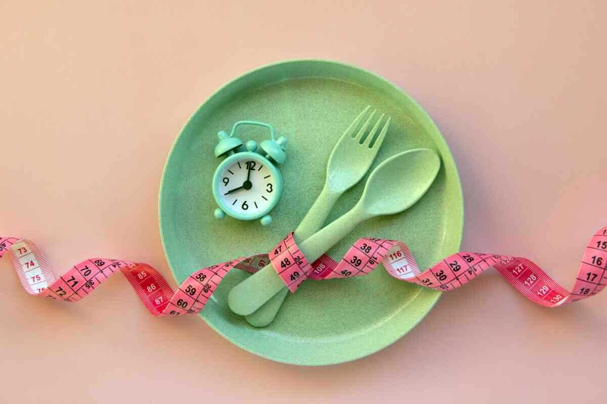
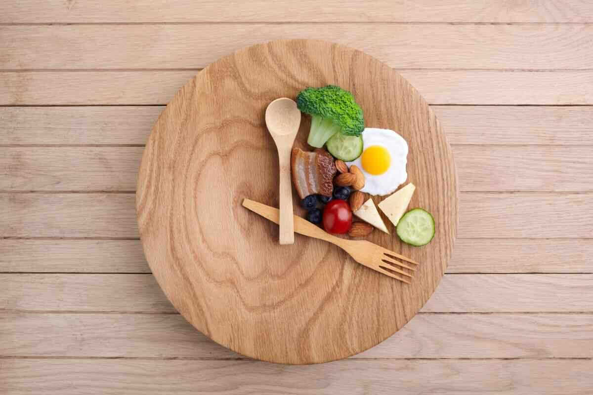

Aralıklı oruç diyeti nedir?
Aralıklı oruç 24 saat içerisinde kahvaltı ve akşam yemeği olmak üzere 2 öğünden oluşan beslenme şeklidir. 16:8 yani 16 saat yemek yemeden ve ardından tekrar 8 saat yemek yemeden geçirilmektedir. 16 saatlik açlığın içine uyku saatleri dahildir. Sabah ve akşam öğünleri arasındaki 8 saat boyunca katı besinler tüketilmemektedir. Su, sade soda, şekersiz kahve veya çay gibi kalorisiz sıvılar içilebilir. Yeterli sıvı alımı önemlidir.
Aralıklı oruç diyetinde belirlenen öğünlerde istenilen besinin yenmesine izin verir, ancak doğru olan sağlıklı yiyeceklerin tercih edilmesidir: Aralıklı oruç diyetinde yüksek karbonhidrat ve şeker içeren, işlenmiş ve hazır gıdalar tüketilmemelidir. Aralıklı oruç diyetine başlanmadan önce bir hekim kontrolünden geçilmesi ve aralıklı orucun bir diyetisyen kontrolünde yapılmasında fayda vardır. Aralıklı oruç diyetinin kilo verme ve sağlık açısından faydalı olduğuna dair çalışmalar bulunmaktadır.

Aralıklı oruç diyeti nasıl yapılır?
Aralıklı oruç diyetinde yemek aralarında şekersiz ve kalorisiz sıvılar tüketilebilir. İlk öğünden sonra 8 saat boyunca yemek yenmez ama sıvı tüketimi serbesttir. Sabah ve akşam öğünü arasında açlık kontrolü zor olan kişiler isteğe bağlı olarak ara öğün yapabilir. Akşam öğününden sonra yine sıvı tüketimi yapılabilir ama ertesi sabah öğününe kadar katı gıda tüketilmez. 16 saatlik açlığa uyku saatleri dahildir. Aralıklı oruç diyeti birkaç gün, hafta, ay ve hatta tüm yıla yayılabilen bir beslenme şeklidir. İsteğe bağlı olarak haftada 2 kere, ayda 1 kere ya da 1 hafta boyunca düzenli olarak aralıklı oruç yapılabilir.
Aralıklı oruç diyetinin yararları nelerdir?
Aralıklı oruç, gün boyunca tüketilen kalorileri azaltarak kilo verilmesine yardımcı olabilir. 16:8 aralıklı oruç diyeti özellikle kendini çok fazla kısıtlamadan "ılımlı bir şekilde kilo vermek" isteyen kişilere uygundur. Mevcut kilosunu korumak isteyenler de bu aralıklı oruçtan fayda görebilmektedir. Aralıklı oruç diyeti detoks etkisi göstererek, vücuttaki toksinleri atılmasına ve hücre yenilenmesine destek olur. Uzun süreli açlık sindirim sistemi dahil vücuttaki diğer sistemlerin dinlenmesini sağlamaktadır. Vücut şeker ve yağ metabolizması daha iyi düzenler, kan basıncı ve kolesterol seviyeleri dengelenir. Aralıklı oruç diyeti kronik hastalıkları önler ve var olan kronik hastalıkların tedavi sürecine olumlu etkisi vardır. Yapılan bir araştırmaya göre aralıklı oruç diyeti kan şekeri düzeylerini düşürmeye de yardımcı olmaktadır.
Aralıklı oruç diyeti kimler yapamaz?
Vücut kitle indeksi (VKİ) 20'nin altında olan kişiler, karaciğeri, böbreği, hipoglisemiyi etkileyen hastalıklar gibi kronik sorunlar veya metabolik rahatsızlıklardan muzdarip olanlar, 18 yaş altı çocuklar, yeme bozukluğu olanlar ayrıca hamile ve emziren kadınların aralıklı oruç diyeti yapmaları önerilmemektedir.
Tip 2 diyabet, düşük tansiyon hastaları veya ürik asiti yüksek olanlar aralıklı orucu doktor kontrolünde yapmalıdır. Bu diyeti kilo kaybetmek için yapmak isteyenlerin diyete başlamadan önce beslenme ve metabolik durum değerlendirmesi için bir uzmana başvurmasında fayda vardır.
